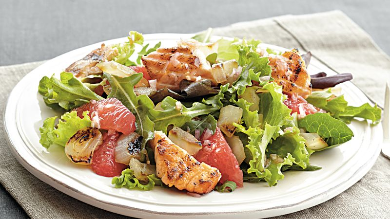

Deviled Egg Salad (back)

Tools You’ll Need to Make Our Best Baked Salmon Recipe
Our baked salmon fillet recipe is really as easy as it gets. A few simple tools and you’ll be forking in no time.
- Sheet pan. Depending on the size of your fillet, a half or quarter pan should do quite nicely.
- Parchment paper. Did we mention there’s virtually no cleanup? You can thank parchment for that.
- Fish spatula. Optional, really. But we do love having one around. Bonus: when you’re not using it to cook fish it makes a great addition to the toddler sensory bin.
Ingredients:
- 3/4 pound fresh salmon filet
- 1 avocado, cubed
- 1 grapefruit, peeled, segmented
- 4 cups loosely packed mache (or other spring greens)
- 1 lemon
- honey mustard vinaigrette
- salt and pepper
Method:
- Preheat oven to 350°. Place the salmon on a parchment lined baking sheet. Season it with salt and pepper. Bake for 15 minutes or until opaque and flakes easily with a fork.
- While the salmon is baking use a paring knife to peel the grapefruit by cutting away skin and slicing each wedge away from the inner white skin.
- Assemble salad on each plate by layering greens, avocado and grapefruit wedges and dress lightly with vinaigrette. Divide the salmon into two pieces and dress with lemon juice, plate and serve along side the salad.